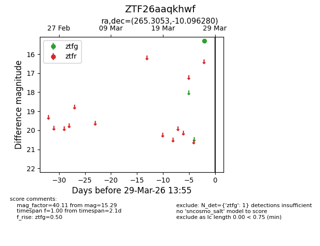
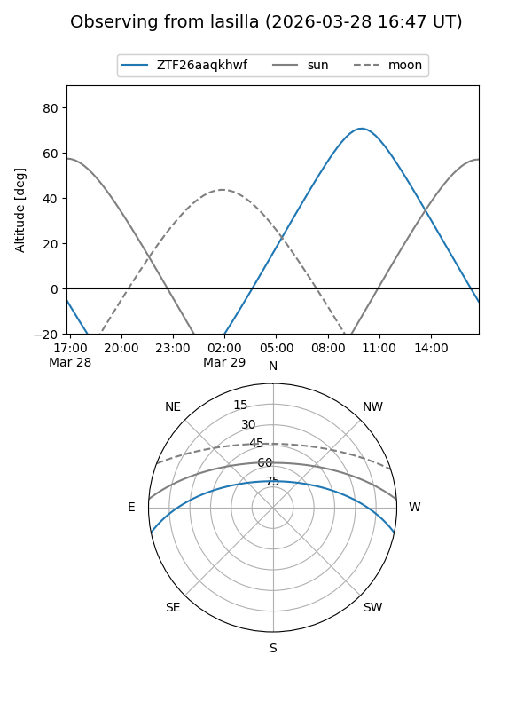
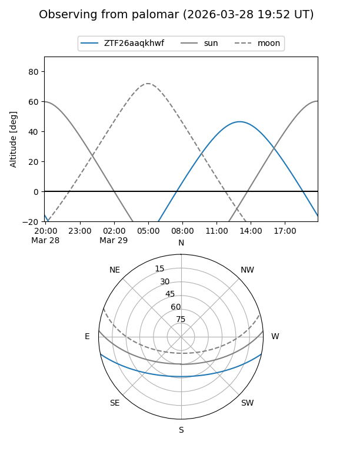

ZTF26aaqkhwf
Target ZTF26aaqkhwf at 2026-03-29 13:58
Aliases and brokers:
FINK: link
Lasair: link
ALeRCE: link
alt names
ZTF26aaqkhwf (ztf,fink_ztf)
Coordinates:
equatorial (ra, dec) = 265.3053,-10.09628
equatorial (HMS+DMS) = 17:41:13.27,-10:05:46.61
galactic (l, b) = (15.6846,+10.62237)
Flags:
Photometry:
last ztfg=15.29
1 ztfg detections
Lightcurve

Visibility


Additional plots